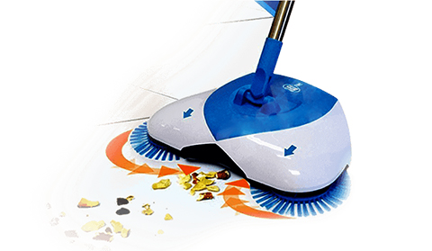

Акция закончится через:

Механический веник Hurricane Spin Broom
Этот веник легко справляется с самыми разными загрязнениями благодаря своей уникальной конструкции. Щетка буквально всасывает всё, не поднимая пыль, и при этом Вам не надо наклоняться.
6 причин купить чудо-веник
- Без проводовКак альтернатива пылесосу, чудо-веник сразу готов к работе и Вы можете быстро убрать любое загрязнение так, как удобно именно Вам. Также Вы легко достанете до высоких и труднодоступных мест, просто раздвинув рукоять до максимума.
- Для любых покрытыйЧудо-веник подходит для уборки глянцевых поверхностей и ковровых покрытий. А благодаря уникальным щеткам — даже для уборки крупного мусора, что делает ее незаменимой для каждой хозяйки.
- Собирает даже шерстьОн легко справляется с уборкой шерсти и волос (щетки электризуются при трении о шерсть, в итоге волосы сами «прилипают» к щётке).
- Легко очищаетсяЧудо-веник легко очищается от грязи: просто нажмите кнопку и вытряхните мусор — веник снова готов к работе!
- Без пылиУборка обычным веником поднимает пыль и провоцирует аллергические реакции. Чудо-веник бережет Ваше здоровье!
- Легкий весБлагодаря использованию лёгких материалов (алюминия и пластика) чудо-веник весит всего 700 г. Это позволяет Вам проводить уборку не уставая!
Характеристики Hurricane Spin Broom
- Материал: пластик, металл
- Цвет: синий, белый
- Размеры: 9,2 х 38 х 21,5 см
- Вес: 700 г
Отзывы довольных покупателей

У меня дома 2 кота и ковры в каждой комнате. Всё постоянно в кошачьей шерсти, а у пылесоса не хватает мощности, чтобы полностью её собирать. Раньше приходилось после уборки отдельно собирать шерсть влажной тряпкой, тратить на это много времени. Теперь я просто прохожусь по коврам чудо-щёткой и она вычёсывает весь мусор.
Ирина 48 лет

Хочу рассказать о данной модели швабры. Покупала в официальном интернет-магазине, осталось только положительное впечатление, какое это чудо. Раз два и всё убрано, чистота и блеск. Заменяет пылесос практически полностью.
Анастасия 27 лет

В первую очередь заинтересовало то, что с использованием щётки не поднимается пыль. Для меня это очень важно, потому что я страдаю от аллергии и уборка традиционным способом мне не представляется возможной. А хочется чтобы дома было чисто и свежо! Чудо-щетка спасает постоянно, теперь уборка — это минимум хлопот.
Наталья 36 лет

Этот чудо-прибор я получила на почте через 3 дня после заказа и сразу почувствовала, насколько он облегчает мне процесс уборки. Благодаря вращающимся щеткам, швабра легко собирает весь мусор: крупный, мелкий и даже сыпучий. А после этого всё это легко вытряхнуть в ведро одним нажатием кнопки. Подруга увидела, как я без хлопот поддерживаю идеальную чистоту — побежала заказывать тоже.
Светлана 32 года
-

Доставка
Почтой или курьером в течение 1-3 дней. Стоимость 50 грн
-

Оплата
Оплата заказов осуществляется по факту получения товара
-

Гарантии
Мы всегда проверяем товар перед отправкой и гарантируем 100% качество